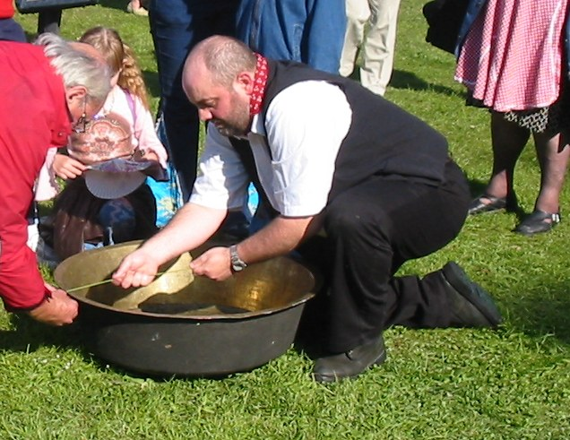

Ch'est eune vielle couôteunme qué d'faithe braithe les peîles, mais jé n'l'ai janmais veu fait.
S'lon l'Docteu Le Maistre, la couôteunme fut pèrdue y'a chent chînquante ans, mais i' sembl'ye qu'i' y'a mention dé deux-trais fanmil'yes tchi la pratiquaient jusqu'ès 1960s.

un bachîn
La couôteunme existe acouo au Pays Gallo en Brétangne et dans la grand' tèrre étout, et i' m'sembliait eune bouonne idée dé ravigoter chutte couôteunme pouor la Fête Nouormande - j'avons des problièmes auve la mûsique et la braithie d'peîles es'sait eune chose bein întérêssante pouor les vîsiteurs et les gens d'Jèrri. Si ch'tait pôssibl'ye ché s'sait tchiquechose qué nou pouôrrait faithe étout ès fêtes quand nou nos d'mande d'faithe tchiquechose.
Nou peut vaie la vibrâtion du ros dans chu portrait
Eh bein, tout preunmiéthement j'empruntis un bachîn pouor pratitchi sus. J'copis des ros et c'menchis à expéthimenter en siéthant les descriptions qué j'avais trouvé.
J'avais liu qu'nou soulait attatchi des cordes à l'entou du bachîn pouor y attatchi les ros, mais j'trouvis qué l'bachîn 'tait trop en ronde et qu'lé fi tchiyait ava les côtes du bachîn.
J'êprouvis don lé mouoyen dé tcheindre lé ros auve eune main d'faichon qu'lé ros 'tait halé contre lé bord du bachîn. En mucrissant l'aut' main et la drissant l'long du ros, jé c'menchis à faithe vibrer lé ros et l'bachîn auve li.
Nou peut vaie la vibrâtion dg'ieau dans chu portrait
En expéthimentant, j'trouvis coumme tchi “jouer” la corde à seule fîn d'faithe braithe la peîle. Jé changis la quantité dg'ieau d'dans mais jé n'crai pon qué chenna fait hardi d'difféthence.
L'préchain expéthiment dait êt' dé mett' d'la coutell'lie dans l'bachîn pouor chèrchi lé miyeur êffet. Lé brit dév'thait êt' même miyeu auve eune pus grande peîle - ou tchiques bachîns et peîles en même temps.
Geraint Jennings
Févri 2002
|
|

|

|
|  |
Viyiz étout: